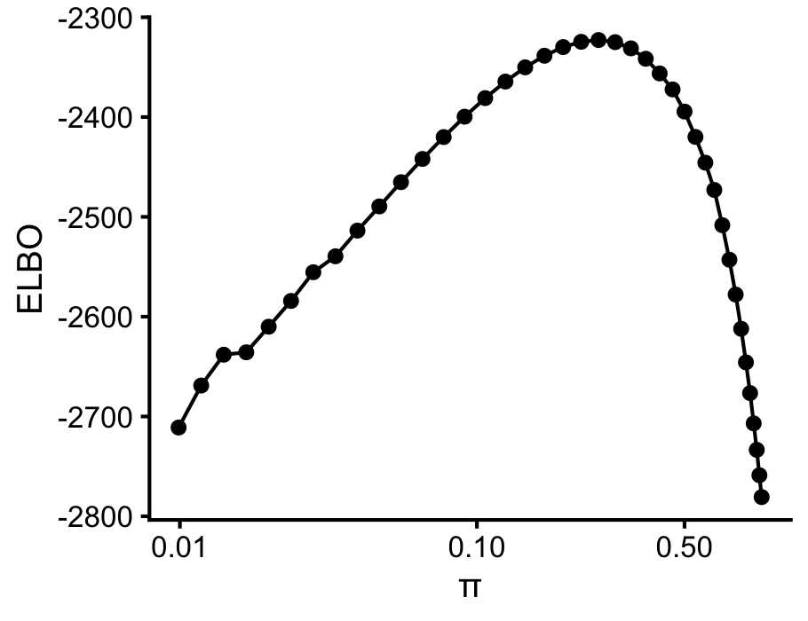

Last updated: 2020-06-23
Checks: 7 0
Knit directory: mr-ash/analysis/
This reproducible R Markdown analysis was created with workflowr (version 1.6.2). The Checks tab describes the reproducibility checks that were applied when the results were created. The Past versions tab lists the development history.
Great! Since the R Markdown file has been committed to the Git repository, you know the exact version of the code that produced these results.
Great job! The global environment was empty. Objects defined in the global environment can affect the analysis in your R Markdown file in unknown ways. For reproduciblity it’s best to always run the code in an empty environment.
The command set.seed(1) was run prior to running the code in the R Markdown file. Setting a seed ensures that any results that rely on randomness, e.g. subsampling or permutations, are reproducible.
Great job! Recording the operating system, R version, and package versions is critical for reproducibility.
Nice! There were no cached chunks for this analysis, so you can be confident that you successfully produced the results during this run.
Great job! Using relative paths to the files within your workflowr project makes it easier to run your code on other machines.
Great! You are using Git for version control. Tracking code development and connecting the code version to the results is critical for reproducibility.
The results in this page were generated with repository version 929e3f5. See the Past versions tab to see a history of the changes made to the R Markdown and HTML files.
Note that you need to be careful to ensure that all relevant files for the analysis have been committed to Git prior to generating the results (you can use wflow_publish or wflow_git_commit). workflowr only checks the R Markdown file, but you know if there are other scripts or data files that it depends on. Below is the status of the Git repository when the results were generated:
working directory clean
Note that any generated files, e.g. HTML, png, CSS, etc., are not included in this status report because it is ok for generated content to have uncommitted changes.
These are the previous versions of the repository in which changes were made to the R Markdown (analysis/difficult_example.Rmd) and HTML (docs/difficult_example.html) files. If you’ve configured a remote Git repository (see ?wflow_git_remote), click on the hyperlinks in the table below to view the files as they were in that past version.
| File | Version | Author | Date | Message |
|---|---|---|---|---|
| Rmd | 929e3f5 | Peter Carbonetto | 2020-06-23 | wflow_publish(“difficult_example.Rmd”) |
| html | 14046ce | Peter Carbonetto | 2020-06-23 | Adjusted figure dimensions in difficult_example. |
| Rmd | 4e1961d | Peter Carbonetto | 2020-06-23 | wflow_publish(“difficult_example.Rmd”) |
| Rmd | 622aab9 | Peter Carbonetto | 2020-06-23 | Added varbvs plot to difficult_example. |
| html | c80470c | Peter Carbonetto | 2020-06-23 | Build site. |
| Rmd | c6591bc | Peter Carbonetto | 2020-06-23 | wflow_publish(“difficult_example.Rmd”) |
| Rmd | 52bdce4 | Peter Carbonetto | 2020-06-23 | Added prediction and evaluation to difficult_example. |
| html | f879e7c | Peter Carbonetto | 2020-06-23 | Added model fitting steps to difficult_example. |
| Rmd | fab51cd | Peter Carbonetto | 2020-06-23 | wflow_publish(“difficult_example.Rmd”) |
| html | 2e47854 | Peter Carbonetto | 2020-06-23 | Implemented data simulation step in difficult_example. |
| Rmd | 60e964a | Peter Carbonetto | 2020-06-23 | wflow_publish(“difficult_example.Rmd”) |
| html | 7c393a2 | Peter Carbonetto | 2020-06-23 | Built difficult_example for first time. |
| Rmd | a17034e | Peter Carbonetto | 2020-06-23 | wflow_publish(“difficult_example.Rmd”) |
To our surprise, we discovered that the Lasso (or the Elastic Net) sometimes provides more accurate predictions than mr.ash in examples where there are many predictors having a small effect on the outcome. Here I expand on an example from Matthew’s brief investigation of this phenomenon to better understand the (mis) behaviour of mr.ash.
These are the packages used in the analysis.
library(glmnet)
library(varbvs)
library(mr.ash.alpha)
library(ggplot2)
library(cowplot)I simulate the data just as Matthew did, except that I split the data into a training set and a test set.
These are the data simulation settings: the number of samples in training set, “n”; number of simulated variables, “p”; the number of variables affecting the outcome (“p1”); and the proportion of variance in the outcome explained by the variables (“pve”).
n <- 500
p <- 1000
p1 <- 467
pve <- 0.95Simulate a \(2n \times p\) design matrix; the first \(n\) rows is the training set data, and the remaining \(n\) rows are the test data.
set.seed(15)
X <- matrix(rnorm(2*n*p),2*n,p)
X <- scale(X,center = TRUE,scale = TRUE)Simulate the \(p\) regression coefficients; only \(p_1 < p\) of the coefficients are nonzero.
b <- rep(0,p)
j <- sample(p,p1)
b[j] <- rnorm(p1)Simulate the responses so that the target PVE is met.
y <- drop(X %*% b)
se <- sqrt((1 - pve)/pve) * sd(y)
y <- y + rnorm(n,sd = se)Split the data 50-50 into a training set and a test set.
test <- 1:n
Xtest <- X[test,]
ytest <- y[test]
X <- X[-test,]
y <- y[-test]Fit the Elastic Net model, in which the penalty strength parameter (\(\lambda\)) is chosen via 10-fold cross-validation.
fit.glmnet <- cv.glmnet(X,y,alpha = 0.95,standardize = FALSE)Fit the mr.ash model using the default settings.
fit.mrash <- mr.ash(X,y,standardize = FALSE)Fit the mr.ash model again, but give it some help by providing it with the prior and residual variance used to simulate the data. Also, I initialize the posterior estimates of the regression coefficients are to the Elastic Net estimates.
b <- coef(fit.glmnet)[-1]
w1 <- p1/p
s <- se^2
fit.trueg <- mr.ash(X,y,beta.init = b,update.pi = FALSE,update.sigma2 = FALSE,
sigma2 = s,sa2 = c(0,1/s),pi = c(1 - w1,w1))Now let’s run mr.ash again, providing with some help, but a little less than before: initialize the prior to the settings used to simulate the data, but allow mr.ash to fit the prior. A well-behaving likelihood (ELBO) surface will guide the iterates toward a setting close to the truth.
fit.trueginit <- mr.ash(X,y,beta.init = coef(fit.glmnet)[-1],
update.pi = TRUE,update.sigma2 = FALSE,
sigma2 = s,sa2 = c(0,1/s),pi = c(1 - w1,w1))Predict the test set outcomes using the fitted models.
y.glmnet <- drop(predict(fit.glmnet,Xtest,s = "lambda.min"))
y.mrash <- predict(fit.mrash,Xtest)
y.trueg <- predict(fit.trueg,Xtest)
y.trueginit <- predict(fit.trueginit,Xtest)Report the accuracy of the test predictions by the root-mean squared error (RMSE).
rmse <- function (x, y) sqrt(mean((x - y)^2))
cat(sprintf("glmnet: %0.3f\n",rmse(ytest,y.glmnet)))
cat(sprintf("mr.ash: %0.3f\n",rmse(ytest,y.mrash)))
cat(sprintf("mr.ash (true prior): %0.3f\n",rmse(ytest,y.trueg)))
cat(sprintf("mr.ash (true prior init): %0.3f\n",rmse(ytest,y.trueginit)))
# glmnet: 15.768
# mr.ash: 18.536
# mr.ash (true prior): 16.432
# mr.ash (true prior init): 19.483These results are surprising in a couple ways:
The Elastic Net method does very well, despite the fact that we typically think of the method as being best suited for sparse settings in which only a few variables have an effect.
Unsuprisingly, mr.ash does well when the prior is fixed to the true settings. However, initializing the mr.ash prior to the truth, then fitting the prior to the data, does not improve performance at all, and in fact makes things slightly worse (at least in this example).
Let’s investigate this second surprise a little more closely.
logodds <- seq(-2,1,length.out = 40)
fit.varbvs <- varbvs(X,NULL,y,sigma = s,sa = 1/s,logodds = logodds,
verbose = FALSE)sigmoid10 <- function (x) 1/(1 + 10^(-x))
logw <- fit.varbvs$logw
pdat <- data.frame(w = sigmoid10(logodds),
elbo = logw,sigmoid10(logodds))
ggplot(pdat,aes(x = w,y = elbo)) +
geom_point() +
geom_line() +
scale_x_continuous(trans = "log10",breaks = c(0.001,0.01,0.1,0.5)) +
labs(x = "\u03c0",y = "ELBO") +
theme_cowplot(10)
sessionInfo()
# R version 3.6.2 (2019-12-12)
# Platform: x86_64-apple-darwin15.6.0 (64-bit)
# Running under: macOS Catalina 10.15.5
#
# Matrix products: default
# BLAS: /Library/Frameworks/R.framework/Versions/3.6/Resources/lib/libRblas.0.dylib
# LAPACK: /Library/Frameworks/R.framework/Versions/3.6/Resources/lib/libRlapack.dylib
#
# locale:
# [1] en_US.UTF-8/en_US.UTF-8/en_US.UTF-8/C/en_US.UTF-8/en_US.UTF-8
#
# attached base packages:
# [1] stats graphics grDevices utils datasets methods base
#
# other attached packages:
# [1] cowplot_1.0.0 ggplot2_3.3.0 mr.ash.alpha_0.1-35
# [4] varbvs_2.6-5 glmnet_4.0-2 Matrix_1.2-18
#
# loaded via a namespace (and not attached):
# [1] shape_1.4.4 tidyselect_0.2.5 xfun_0.11
# [4] purrr_0.3.3 splines_3.6.2 lattice_0.20-38
# [7] colorspace_1.4-1 htmltools_0.4.0 yaml_2.2.0
# [10] survival_3.1-8 rlang_0.4.5 later_1.0.0
# [13] pillar_1.4.3 glue_1.3.1 withr_2.1.2
# [16] RColorBrewer_1.1-2 jpeg_0.1-8.1 foreach_1.4.7
# [19] lifecycle_0.1.0 stringr_1.4.0 munsell_0.5.0
# [22] gtable_0.3.0 workflowr_1.6.2 codetools_0.2-16
# [25] evaluate_0.14 labeling_0.3 latticeExtra_0.6-29
# [28] knitr_1.26 httpuv_1.5.2 Rcpp_1.0.3
# [31] promises_1.1.0 backports_1.1.5 scales_1.1.0
# [34] farver_2.0.1 fs_1.3.1 png_0.1-7
# [37] digest_0.6.23 stringi_1.4.3 dplyr_0.8.3
# [40] nor1mix_1.3-0 grid_3.6.2 rprojroot_1.3-2
# [43] tools_3.6.2 magrittr_1.5 tibble_2.1.3
# [46] crayon_1.3.4 whisker_0.4 pkgconfig_2.0.3
# [49] assertthat_0.2.1 rmarkdown_2.0 iterators_1.0.12
# [52] R6_2.4.1 git2r_0.26.1 compiler_3.6.2